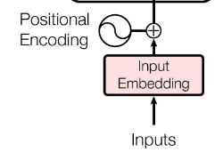

Understanding Transformers: Step by Step
What is a Transformer?
- Revolutionary neural network architecture introduced in “Attention Is All You Need” (2017)
- Key innovation: Replaces recurrence and convolutions entirely with attention mechanisms
- Enables parallel processing of sequences (unlike RNNs)
- Foundation for modern LLMs including GPT-2, GPT-3/4, BERT

Transformer Evolution
A Visual Representation

The Big Picture: Transformer Architecture
- Encoder-Decoder Structure: Input → Encoder → Decoder → Output
- Self-Attention: Each position can attend to all positions in previous layer
- Parallelizable: No sequential dependencies like RNNs
The recipe: Part 1
Tokenise the source sentence and add start/end markers
Embed each token + add positional encodings
Encoder (× N layers)
- Multi-head self-attention
- Position-wise feed-forward network
- Residual connection + LayerNorm after each sub-layer
- Multi-head self-attention
Cache the resulting encoder hidden states (the “memory”)
The recipe: Part 2
- Decoder (run autoregressively)
- Embed the generated prefix tokens + positional encodings.
- Masked self-attention (each token sees only ≤ current position).
- Cross-attention over the encoder memory (lets the decoder “look back” at the source).
- Feed-forward → Residual → LayerNorm.
- Linear projection (tied to embeddings) → softmax → probability distribution.
- Select the next token (greedy, top-k, nucleus, beam, …), append it, and repeat until ⟨end of sentence EOS⟩ or a maximum length.
- Embed the generated prefix tokens + positional encodings.
New vocabulary?
- Self-Attention: Mechanism allowing each token to attend to all other tokens in the sequence, capturing dependencies regardless of distance.
- Multi-Head Attention: Multiple self-attention mechanisms running in parallel, allowing the model to capture different types of relationships.
- Feed-Forward Network (FFN): A fully connected neural network applied to each position independently, typically with a ReLU (Rectified Linear Unit) activation.
- Positional Encoding: Adds information about the position of each token in the sequence, since transformers do not have a built-in notion of order.
- Residual Connection: A shortcut connection that adds the input of a layer to its output, helping to prevent vanishing gradients in deep networks.
- Layer Normalization: A technique to stabilize and accelerate training by normalizing the inputs to each layer, applied after residual connections.
Step 1: Input Embeddings
Token Embeddings
When you feed a sequence of tokens into a transformer‐based LLM, each discrete token (an integer index) is turned into a dense vector of lower dimensionality than the vocabulary size
Let \(V\) be the vocabulary size, and \(N\) the sequence length
A token \(j\) is an integer in the set \(\{0, 1, \ldots, V-1\}\)
A brute force one-hot vector encoding \(x \in \{0,1\}^V\) \[ x_j = \begin{cases} 1 & \text{if } j = i \\ 0 & \text{otherwise} \end{cases} \]
This is inefficient, especially for large vocabularies, as it results in high-dimensional sparse vectors
Instead, we use a learnable embedding matrix \(\mathbf{E} \in \mathbb{R}^{V \times d_{\text{model}}}\), where \(d_{\text{model}}\) is typically much smaller than \(V\)
Step 1: Positional Encoding
- If token \(t\) is represented by index \(j\), its embedding is given by the \(j\)-th row of \[ \mathbf{e}_j = \mathbf{x}_j^T \mathbf{E} = \mathbf{E}_j \]
Positional Encoding
Since transformers have no inherent notion of position, we add positional information:
\[PE_{(pos, 2i)} = \sin\left(\frac{pos}{10000^{2i/d_{\text{model}}}}\right)\]
\[PE_{(pos, 2i+1)} = \cos\left(\frac{pos}{10000^{2i/d_{\text{model}}}}\right)\]
Final input: \(\text{input}_i = \text{embedding}_i + PE_i\)
Step 2: Self-Attention Mechanism - The Core
Queries, Keys, and Values
For each token embedding \(\mathbf{x}_i\), we create three vectors:
\[\mathbf{q}_i = \mathbf{x}_i \mathbf{W}^Q \quad \text{(Query)}\] \[\mathbf{k}_i = \mathbf{x}_i \mathbf{W}^K \quad \text{(Key)}\]
\[\mathbf{v}_i = \mathbf{x}_i \mathbf{W}^V \quad \text{(Value)}\]
Where \(\mathbf{W}^Q, \mathbf{W}^K, \mathbf{W}^V \in \mathbb{R}^{d_{\text{model}} \times d_k}\) are learned parameter matrices.
Step 3: Computing Attention - The Intuition
Attention Formula
\[\text{Attention}(\mathbf{Q}, \mathbf{K}, \mathbf{V}) = \text{softmax}\left(\frac{\mathbf{Q}\mathbf{K}^T}{\sqrt{d_k}}\right)\mathbf{V}\]
Step-by-step breakdown:
- Dot product: \(\mathbf{Q}\mathbf{K}^T\) gives similarity scores between all pairs
- Scale: Divide by \(\sqrt{d_k}\) to prevent softmax saturation
- Normalize: Apply softmax to get attention weights
- Weighted sum: Multiply by values \(\mathbf{V}\)
Step 3: Attention Visualization

- Each token attends to all other tokens
- Attention weights determine how much information flows
- Self-attention is the key to capturing dependencies regardless of distance
- This replaces the need for recurrence in traditional RNNs
Step 4: Multi-Head Attention
- Single attention mechanism provides limited representational power
- Multi-head attention runs multiple attention computations in parallel
- Each “head” learns different relationship patterns:
- Some heads focus on nearby words
- Others capture long-range dependencies
- Some track syntactic relationships
\[\text{MultiHead}(\mathbf{Q}, \mathbf{K}, \mathbf{V}) = \text{Concat}(\text{head}_1, \text{head}_2, ..., \text{head}_h)\mathbf{W}^O\]
Where each head is computed as: \[\text{head}_i = \text{Attention}(\mathbf{Q}\mathbf{W}_i^Q, \mathbf{K}\mathbf{W}_i^K, \mathbf{V}\mathbf{W}_i^V)\]
Step 5: Feed-Forward Networks
- After attention, each position goes through identical feed-forward networks
- Applied to each position separately and identically
- Consists of two linear transformations with a ReLU activation in between:
\[\text{FFN}(x) = \max(0, x\mathbf{W}_1 + \mathbf{b}_1)\mathbf{W}_2 + \mathbf{b}_2\]
- This introduces non-linearity and allows the model to transform the representation
Step 6: Residual Connections & Layer Normalization
- Residual connections help with training deep networks:
- Add the input of each sub-layer to its output: \(x + \text{Sublayer}(x)\)
- Allows gradients to flow through the network more easily
- Layer normalization stabilizes the learning process:
- Normalizes the inputs across the features
- Applied after each residual connection
\[\text{LayerNorm}(x + \text{Sublayer}(x))\]
Transformer Model Applications
- Machine Translation: Original use case in “Attention Is All You Need”
- Text Generation: Foundation for GPT models
- Document Understanding: BERT and its variants
- Multimodal Applications: Vision transformers, audio transformers
- Financial Applications: Market prediction, sentiment analysis, report generation
GPT-2: A Landmark Decoder-Only Model
GPT-2 Architecture Basics
- Released by OpenAI in 2019
- Decoder-only transformer architecture
- Trained on 40GB of internet text
- Available in different sizes:
- Small: 117M parameters
- Medium: 345M parameters
- Large: 762M parameters
- XL: 1.5B parameters
GPT-2: Model Architecture Details
- Uses masked self-attention (can only attend to previous tokens)
- No encoder-decoder structure, just the decoder component
- Trained on a simple next-token prediction objective
- Layer configuration (for 1.5B model):
- 48 layers
- 1600 dimensional embeddings
- 25 attention heads
GPT-2: Key Innovations
- Demonstrated impressive zero-shot capabilities
- Introduced unsupervised pre-training at scale
- Showed that scaling model size and data substantially improves performance
- Established the foundation for subsequent models like GPT-3 and GPT-4
- Pioneered better sampling methods for text generation
Sampling Strategies: Introduction
- After the model computes the probability distribution for the next token, how do we select it?
- Different sampling methods produce different text qualities and characteristics
- Trade-off between:
- Determinism: Consistent, predictable outputs
- Creativity: Novel, diverse text generation
- Coherence: Staying on topic without degrading
Sampling Strategy: Greedy Decoding
- Approach: Always select the most probable next token
- Formula: \(y_t = \arg\max_w P(w|y_{<t})\)
Advantages:
- Simple to implement
- Often produces coherent text for short sequences
- Deterministic results
Disadvantages:
- Lacks diversity
- Can get stuck in repetition loops
- May produce suboptimal overall sequences
Sampling Strategy: Temperature Sampling
- Approach: Sample from softmax distribution with temperature adjustment
- Formula: \(P(w|y_{<t}) = \frac{\exp(z_w/T)}{\sum_{w'} \exp(z_{w'}/T)}\)
Temperature effects:
- \(T < 1\): Makes distribution more peaked (less random)
- \(T > 1\): Makes distribution more uniform (more random)
- \(T = 1\): Standard softmax, no adjustment
- \(T \to 0\): Approaches greedy decoding
Sampling Strategy: Top-K Sampling
- Approach: Limit sampling to the K most likely next tokens
- Procedure:
- Sort the vocabulary by probability
- Keep only the top K tokens
- Renormalize probabilities
- Sample from this smaller distribution
Advantages:
- Reduces chance of selecting low-probability (potentially nonsensical) tokens
- Maintains some randomness
- Often produces more coherent text than pure sampling
Disadvantages:
- K is a fixed hyperparameter regardless of confidence distribution
- May be too restrictive for some contexts, too permissive for others
Sampling Strategy: Nucleus (Top-p) Sampling
- Approach: Sample from the smallest set of tokens whose cumulative probability exceeds threshold p
- Procedure:
- Sort tokens by probability
- Keep adding tokens until cumulative probability ≥ p
- Renormalize and sample from this dynamic set
Advantages:
- Adapts to the confidence of the model
- More flexible than Top-K
- Current standard for high-quality text generation
Disadvantages:
- Slightly more complex to implement
- Still requires tuning the p parameter (typically 0.9-0.95)
Sampling in Financial Applications
Conservative Approach (Low Temperature/High Precision):
- Regulatory reporting
- Earnings statement generation
- Financial advice
Creative Approach (Higher Temperature/More Exploration):
- Market scenario generation
- Stress testing
- Alternative investment thesis formulation
Putting It All Together: The Transformer Revolution
- Transformers dramatically improved NLP capabilities through:
- Parallelization: Training efficiency
- Attention Mechanism: Better at capturing relationships
- Scalability: Performance continues to improve with size
- Led to a new paradigm of foundation models
- Enabled financial applications previously considered impossible
- Continues to evolve with each new model generation